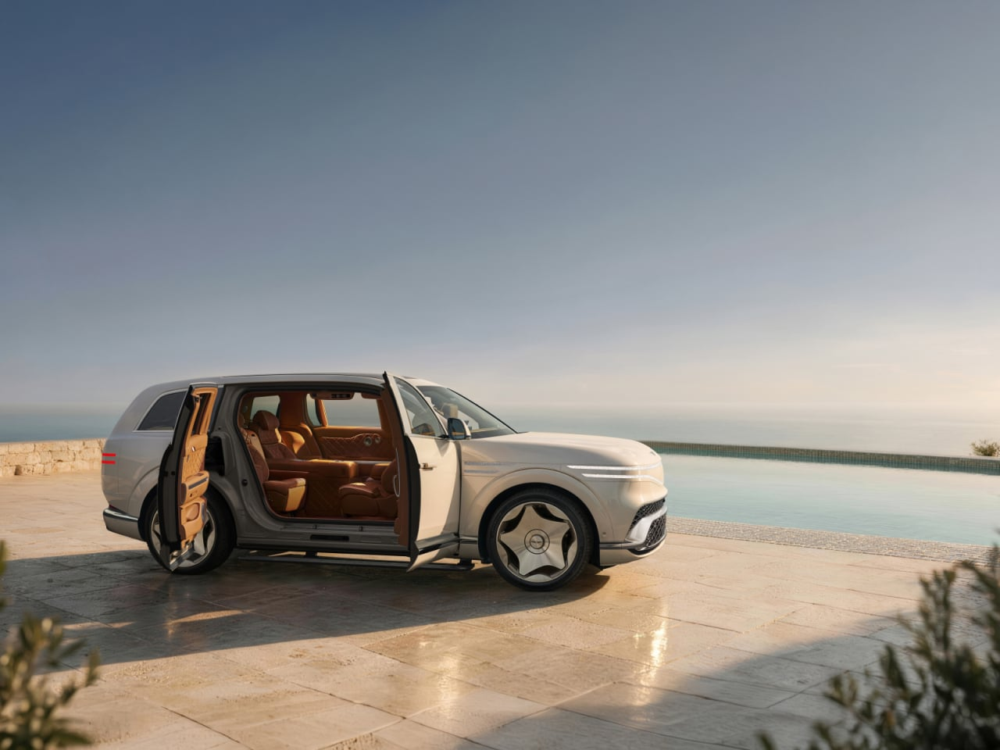
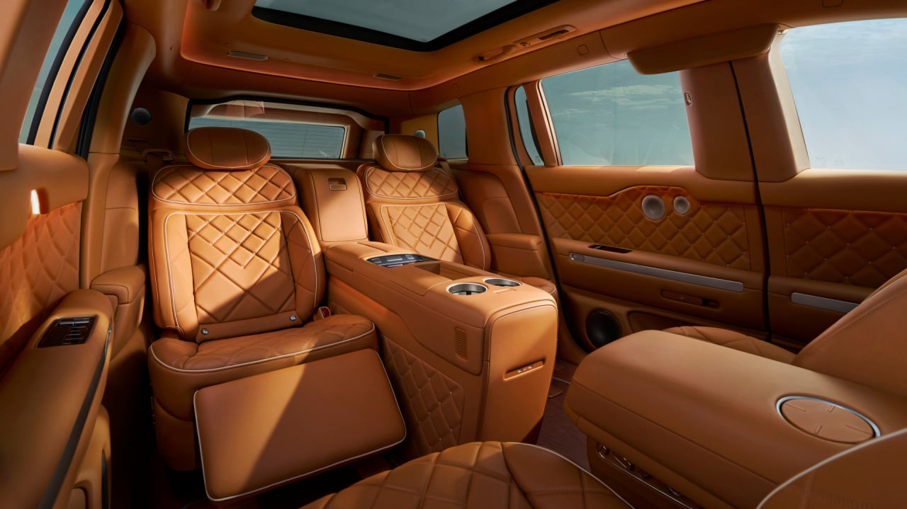
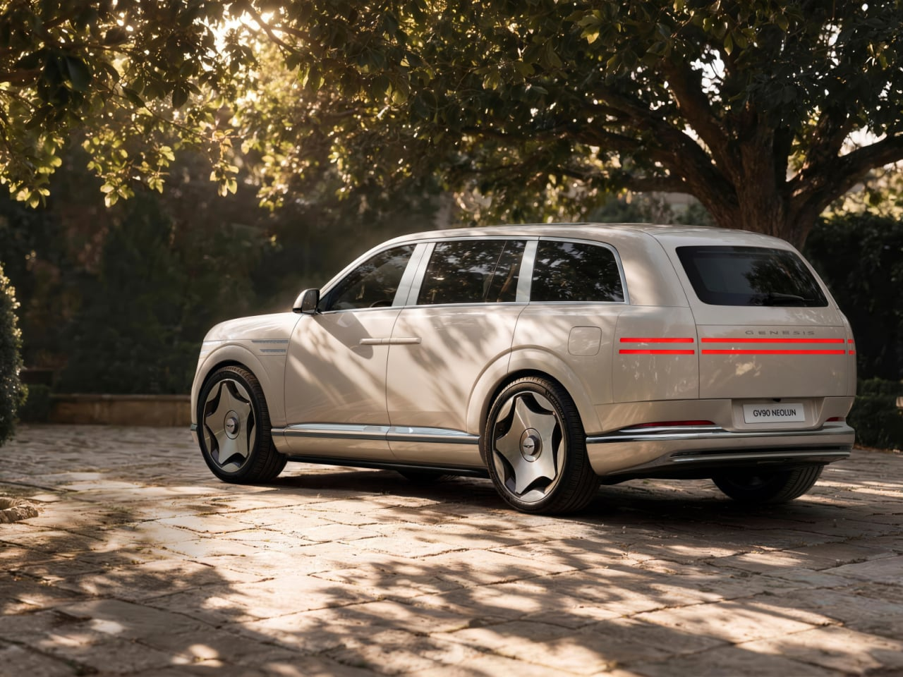
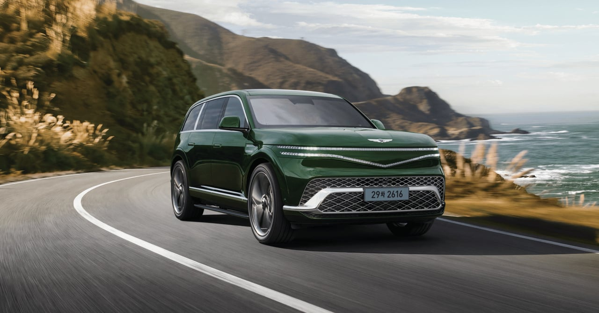

GV90 가격이 나왔습니다.
국산차 최고가를 2억3950만원으로 경신했습니다.
▲GV90 스탠다드(7인승) 1억 3,950만 원
▲GV90 인디비쥬얼 라운지 시트(6인승) 1억 4,550만 원
▲GV90 네오룬 스탠다드(6인승) 1억 8,990만 원
▲GV90 네오룬 이그제큐티브 스위트(4인승) 2억 3,950만 원
제네시스가 브랜드 최초의 초대형 플래그십 전동화 SUV ‘GV90 네오룬(GV90 Neolun)’과 ‘GV90’를 10일(화) 출시했다.
GV90는 제네시스가 지금까지 쌓아온 럭셔리 철학과 전동화 기술 역량이 모두 집약된 상징적인 모델로, 고객이 차량 안에서 경험하는 모든 순간을 품격 있고 특별하게 만들기 위한 제네시스의 환대(Hospitality) 철학이 가장 높은 수준으로 구현됐다. GV90는 스윙 도어를 적용한 ‘GV90’와 세계 최초의 독립 개폐형 히든 B필러 코치 도어 ‘네오룬 아치 게이트’를 적용한 ‘GV90 네오룬’ 두 가지 모델로 운영된다.
https://n.news.naver.com/article/215/0001272231
1.4억이면 괜찮아보이네
물론 난 살 돈 없음